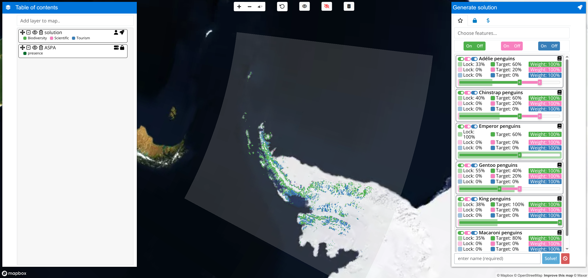

Interactive decision support tool to navigate management options for the Antarctic Peninsula. The tool identifies priority areas for implementing policies for conservation, tourism, and scientific research. To achieve this, it leverages previously published data (Lee et al. 2024) and multi-objective optimization techniques through the prioritizr package (Hanson et al. 2025). Although default parameters are specified based on stakeholder surveys, users can calibrate weights and representation targets to fine tune optimization procedures according to their own preferences. Optimization procedures can be performed with the Gurobi (https://www.gurobi.com/) or CBC (via the rcbc package, https://github.com/dirkschumacher/rcbc) exact algorithm solvers.
Usage
The application is available online. Please note that you must use Google Chrome for it to work.
|
 |
Installation
The application is available as an online service provided by the Antarctic and Southern Ocean Coalition. If you need to run the application on your own computer, then you can run it using the R statistical computing environment, Docker, or Docker Compose.
Using R
To use this method, you will need to install the R statistical computing environment. After completing the installation, you can install the application using the following R code:
if (!require(remotes)) install.packages("remotes")
remotes::install_github("asoc-org/asoc")You can then use the following R code to start the application and open it in your web browser:
asoc::run_app()Using Docker
To use this method, you will need to install Docker Engine (see here for instructions). After completing this step, you can install the application from the DockerHub repository. Specifically, please use the following system command:
You can then view the application by opening the following link in Google Chrome: http://localhost:3838. After you have finished using the application, you can terminate it using the following system command. Note that if you don’t terminate the application once you are finished using it, then it will continue running in the background.
Using Docker Compose
To use this method, you will need to install Docker Engine (see here for instructions) and Docker Compose (see here for instructions). After installing both programs, you can install the application by cloning this repository and then using the following system commands:
You can then view the application by opening the following link in Google Chrome: http://localhost:3838. After you have finished using the application, you can terminate it using the following system command. Note that if you don’t terminate the application once you are finished using it, then it will continue running in the background.
Contributing
The application is a Shiny web application developed with the R statistical computing environment. Specifically, it follows the golem framework for application development, packer framework for JavaScript code and dependency management, htmlwidgets package for interfacing with JavaScript widgets, and renv package for R package dependency management. This means that the application is effectively an R package that contains code for defining and launching the application (see here for more details). The R code files (located in the ./R directory) are organized according to the following naming conventions:
-
app_: Defines the web application:-
app_config.R: Imports configuration settings. -
app_startup.R: Initializes the application. It performs a similar to theglobal.Rfile in typical Shiny applications. -
app_ui.R: Defines the user interface for the application. It performs a similar role to theui.Rfile in typical Shiny applications. -
app_server.R: Defines the (back-end) server-side logic for the application. It performs a similar role to theserver.Rfile in typical Shiny applications. -
app_server_*.R: Defines components used to assemble the server-side logic for the application.
-
-
class_: Defines S3 and R6 object classes for managing data. -
method_: Defines S3 methods for managing data. -
fct_: Defines functions for analysis and data manipulation. -
widget_: Defines custom htmlwidgets widgets. -
utils_: Defines utility functions.
Acknowledgments
cat(
readLines(
system.file("app", "text", "acknowledgments.md", package = "apscp")
)
)This project is supported and led by the Antarctic and Southern Ocean Coalition (ASOC). The data and foundations underlying the project were produced during the SCAR-IAATO Systematic Conservation Planning Project, which was supported by the International Association of Antarctica Tour Operators (IAATO), the Scientific Committee on Antarctic Research (SCAR) and Monash University. This application was built using the Shiny web application framework for the R statistical computing environment. It uses the prioritizr R package and the CBC (Coin-OR branch and cut) and Gurobi optimization software to generate solutions. It also uses the DataTables, D3, Mapbox GL JS, noUiSlider, SortableJS, modified version of the sidebar-v2 Leaflet plugin, and Tom Select JavaScript libraries.
Getting help
Thank you for checking out this application. If you encounter any software defects (e.g. application crashes, unexpected behavior, or spelling mistakes), please feel free to post them on the issue tracker.